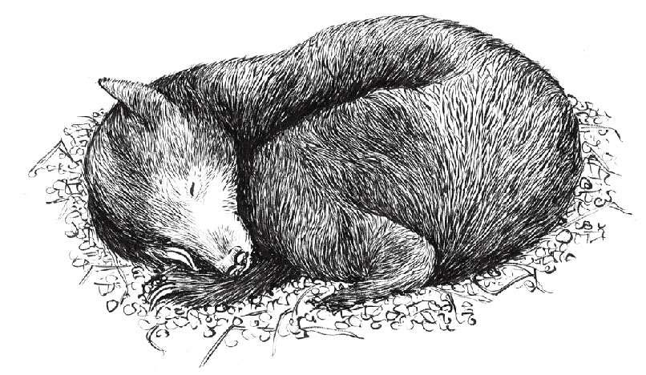

很多哺乳动物、鱼和鸟类的行为与季节息息相关。交配、迁徙与冬眠模式都会受季节和天气变化的影响。很多鸟类会飞往南方过冬，鱼类如大马哈鱼则需要经过长途跋涉从小河游到大海，再游回到它们出生的地方去产卵。
在冬眠前，动物的身体会经历一些变化，如体温下降、呼吸减缓到最慢、心率和代谢速度降低到最小。在天气寒冷、食物稀少时，冬眠的动物能将能量一直保存到食物再度充足为止。根据物种的不同，冬眠可以持续数天、数周甚至数月。啮齿动物如地松鼠、土拨鼠和睡鼠、欧洲刺猬，一些有袋动物和灵长类是天生的冬眠动物。也就是说，无论气温和食物供应情况如何，它们每年都会冬眠。
熊是最高效的冬眠动物之一。在寒冷的冬天，它们通过抑制代谢而非降低体温来保存能量，它们还可以循环利用自身的蛋白质和尿液。在冬眠过程中，熊可以数月保持“不动”。

地球上只有少数几种动物的交配模式不受季节影响，人类是其中之一。我们也不冬眠，但在采集狩猎时期会根据不同季节的捕食模式进行迁徙。现在地球上仍有一些游牧部落，过着按四季循环沿古老路线迁徙的生活。
文学世界中的时钟
在很多经典小说中，时钟被用作凶兆和隐喻。
“当我站在她面前时……我才仔细注意到周围的东西，发现她的手表停在7点50分，屋里的时钟停在8点40分。”在查尔斯·狄更斯（Charles Dickens）的小说《远大前程》（ Great Expectations ）中，停止的时钟代表内心阴霾的郝薇香小姐的生活，她的生活停止在婚礼早上得知未婚夫背叛她的那一刻。房子外面的大钟也停在相同的时刻，当时她坐在黑暗中，身上依旧穿着婚纱，下定决心去惩罚那个伤害她的男性。
在悬疑小说《怪钟疑案》（ The Clocks ）中，作者阿加莎·克里斯蒂（Agatha Christie）借助计时员推进故事情节。打字员雪拉·威伯去盲人女士家赴约时，发现一位男子死在一间有6座时钟的房间，这些时钟有4座停在4点13分。大侦探赫尔克里·波洛必须解开这些钟的谜底才能找到杀害男子的凶手。
詹姆斯·瑟伯（James Thurber）的童话故事《13只钟》（ The Thirteen Clocks ）中，棺材城堡（实在令人毛骨悚然）里所有时钟都停在4点50分，城堡主人——妄自尊大的公爵认定自己征服了时间。但是，当佐恩王子和公爵侄女萨拉琳达手牵手时，两人的爱情和后者的美貌唤醒了时钟，时钟嘀嗒敲响了5点钟声。最终王子和萨拉琳达逃出城堡，邪恶的公爵得到了应有的惩罚。这个寓言故事警告人们想让时间停滞是不可能的。
人类的寿命很大程度上取决于每个人的出生地和所处的社会经济环境。在广义的“西方”，日本人的平均寿命最长，约82岁到83岁。居第二位的是瑞士，还有中国香港地区，约81岁到82岁。加拿大、澳大利亚、以色列和很多富裕的欧洲国家包括英国，平均寿命基本都在80岁左右。而将大部分钱花在个人医疗保健方面的美国，平均寿命则相对较低，约为77.97岁。值得注意的是这些数据来自联合国（经济及社会理事会）发展计划署，比其下属机构世界卫生组织（WHO）的数据慷慨得多，WHO给出的美国人平均寿命是75.9岁，而《中情局世界概况》（CIA World Factbook ）给出了更为慷慨的78.37岁。
根据联合国数据，全球人类平均寿命是67.2岁（男性65.71，女性70.14），这一数字已经相当不错，因为从青铜时代到20世纪初，普通人的平均寿命一直在30岁上下徘徊，还有大量的儿童夭折。
接着对比全球平均寿命67.2岁和西方国家最短的76岁到78岁，这10岁差距背后的原因相当残酷。平均寿命最短的国家大多数位于非洲大陆（从41岁、42岁到58岁、59岁），但还有个明显的例外，阿富汗人目前的平均寿命只有45岁左右。
数据显示西方人拥有更多时间。所以当你感觉充满压力、没有时间完成想做的事时，想想你比那些不幸的斯威士兰（非洲东南部国家）人多出来的50年时间，根据美国中央情报局的数据他们的平均寿命还不到32岁。
表达时间
在写作本书的过程中，我才知道英语中有多少与时间相关的俚语和谚语，我们在日常对话中使用的“时间”这个词有多频繁。
时间会治愈一切伤痛（time heals all wounds），欢乐的时光总是很短暂（time flies when you’re having fun），时不我待（time runs out on us），把握当下（there’s no time like the present），除非“当下”时机不对（unless what you’re doing constitutes bad timing）。当事情进行得很顺利时，一切都按部就班（run like clockwork），但最好不要等到最后一刻（the eleventh hour），顺其自然（keep things ticking over）就好。还有，晚做总比不做好（better late than never），要不失时机（in the nick of time）采取行动。囚犯身在牢狱（do time），手头有大把时间（have time on their hands）。一个屡试不爽的真理是（time and again，time after time）：及时行事，事半功倍（a stitch in time saves nine）。 [3]